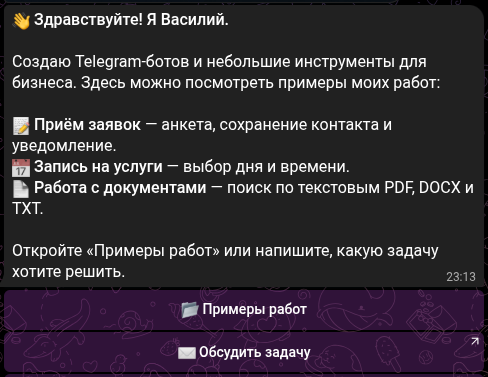
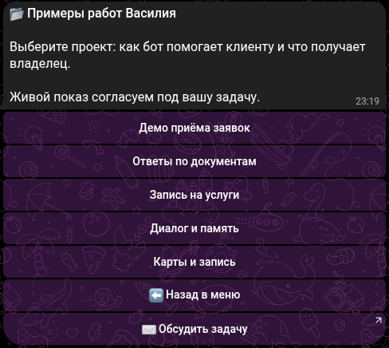
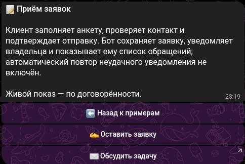
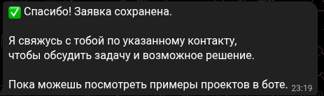

Портфолио в Telegram
Настоящие экраны портфолио · Показ по договорённости · Актуальная доступность — в карточке Telegram-портфолио
Я собрал свои проекты в одном Telegram-боте. Можно выбрать пример, выяснить, чем он полезен, и перейти к обсуждению.
В собственной форме портфолио контакт сохраняется сразу после ввода. На снимках видно меню, открытую карточку и ответ после сохранения.
Адрес бота этого проекта — @SmartCloser15Bot. Доступность живого показа нужно уточнить у Василия.







